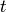
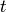

This peakshape function is designed to be used to fit time-of-flight peaks. In particular this function is the convolution of the Ikeda-Carpender function, which aims to model the neutron pulse shape from a moderator, and a pseudo-Voigt that model any broading to the peak due to sample properties etc.
The Ikeda-Carpender function is (Ref [1])

where  and
and  are the fast and slow neutron
decay constants respectively,
are the fast and slow neutron
decay constants respectively,  a maxing coefficient that
relates to the moderator temperature and  is time.
and are further modelled to depend on
wavelength and using the notation in the Fullprof manual (Ref [2]) the
refineable Ikeda-Carpender parameters are Alpha0, Alpha1, Beta0 and
Kappa and these are defined as
a maxing coefficient that
relates to the moderator temperature and  is time.
and are further modelled to depend on
wavelength and using the notation in the Fullprof manual (Ref [2]) the
refineable Ikeda-Carpender parameters are Alpha0, Alpha1, Beta0 and
Kappa and these are defined as


, where  is the neutron wavelength. In general when
fitting a single peak it is not recommended to refine both Alpha0 and
Alpha1 at the same time since these two parameters will effectively be
100% correlated because the wavelength over a single peak is likely
effectively constant.
is the neutron wavelength. In general when
fitting a single peak it is not recommended to refine both Alpha0 and
Alpha1 at the same time since these two parameters will effectively be
100% correlated because the wavelength over a single peak is likely
effectively constant.
The pseudo-Voigt function is defined as a linear combination of a Lorentzian and Gaussian and is a computational efficient way of calculation a Voigt function. The Voigt parameters are related to the pseudo-Voigt parameters through a relation (see Fullprof manual eq. (3.16) which in revision July2001 is missing a power 1/5). It is the two Voigt parameters which you can refine with this peakshape function: SigmaSquared (for the Gaussian part) and Gamma (for the Lorentzian part). Notice the Voigt Gaussian FWHM=SigmaSquared*8*ln(2) and the Voigt Lorentzian FWHM=Gamma.
For information about how to create instrument specific values for the parameters of this fitting function see CreateIkedaCarpenterParameters.
The implementation of the IkedaCarpenterPV peakshape function here follows the analytical expression for this function as presented in the Fullprof manual, see Ref[2].
References:
The figure below illustrate this peakshape function fitted to a TOF peak:

| Name | Default | Description |
|---|---|---|
| I | 0.0 | The integrated intensity of the peak. I.e. approximately equal to HWHM times height of peak |
| Alpha0 | 1.6 | Used to model fast decay constant |
| Alpha1 | 1.5 | Used to model fast decay constant |
| Beta0 | 31.9 | Inverse of slow decay constant |
| Kappa | 46.0 | Controls contribution of slow decay term |
| SigmaSquared | 1.0 | standard deviation squared (Voigt Guassian broadening) |
| Gamma | 1.0 | Voigt Lorentzian broadening |
| X0 | 0.0 | Peak position |
Categories: FitFunctions | Peak